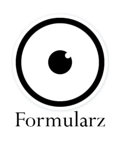
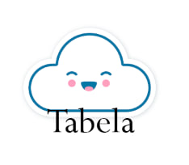
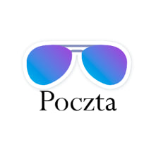
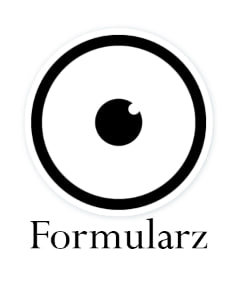
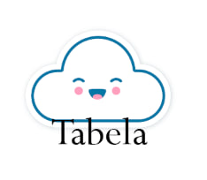
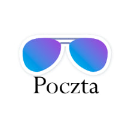

Welcome!
To
Słodka Fantazja!
Nasz sklep jest najpopularniejszy w Polsce. Używamy tylko naturalne produkty. Sklep cukierniczy"Słodka Fantazja" - to miejsce, gdzie możecie sprobować dużo różnych słodycz. Mamy dużo różnych słodycz ze całego świata. Tutaj możesz spotkacz się z kolegami, rodziną ta in. W naszym menu znajdziesz rożne ciasta, czekolady, marmolady ta inne słodycze z róznych krajów. Naszy szefowie gotują jak profesjonaliści
 




